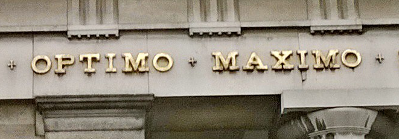

Exact histogram specification (EHS) is a classic image processing problem which consists of imposing any desired histogram onto an arbitrary image.
We talk of optimum EHS when the distortion incurred by imposing the desired histogram is minimum. Here we make available an EHS Matlab toolbox that allows you to implement optimum EHS according to the MSE criterion, as described in detail in [2]. The toolbox also implements reconstruction (inverse EHS problem) and compares a number of theoretical and empirical results. The README file should be enough to get you going.
The exact histogram specification (EHS) problem (less often called "direct histogram specification", "histogram matching", "histogram modification", or "histogram modelling") finds its roots in the generalisation of the concept of histogram equalisation: the latter is just a special case of exact histogram specification where the imposed histogram is flat.
For years, the solution to the EHS problem was known to be unique in the continuous case. In 2006 Coltuc et al. [6] showed that the lack of uniqueness in the discrete case (which is of more practical importance to image processing) could be overcome by using strict pixel orderings. This work sparked a peak of activity around the EHS problem, but the problem has remained unsolved until now in terms of analytical optimality under any similarity criterion (see references in [2]).
The relevance of the EHS toolbox that we provide herein is put in context by the following paragraph from the well-known digital image processing book by Gonzalez and Woods:
"Although it probably is obvious by now, we emphasize (...) that histogram specification is, for the most part, a trial-and-error process (...) In general, (...) there are no rules for specifying histograms (...)" [1, page 160]
The remark above is no longer true, as it will be clear to anyone using the toolbox (see [2] for more details).
Update: The latest edition of "Digital Image Processing" by Gonzalez and Woods [7] now covers exact histogram specification, explicitly following Coltuc's et al paper [6]. Unfortunately, the book does not discuss the optimality of the procedure, and it incorrectly states that exact histogram specification can fail (see Figure 3.30 in [7], where the equalised histogram (b) is not completely flat).Standard signal processing programs persist in using histogram specification algorithms which are out of sync with the latest developments in the area. See for example the histeq (histogram equalisation) function in Matlab, which according to its documentation
transforms the grayscale image (...) so that the histogram of the output grayscale image (...) is approximately flatUpdate: Matlab R2025b's histeq insists in not wanting to produce completely flat histograms (or arbitrarily chosen ones, as the case might be) with minimum MSE distortion.
Enjoy!
Félix Balado
[1] R.C. Gonzalez and R.E. Woods, "Digital image processing", Prentice-Hall, 3rd edition, 2007
[2] F. Balado, "Optimum exact histogram specification", 44th IEEE International Conference on Acoustics, Speech and Signal Processing (ICASSP), Calgary, Canada, April 2018 [full text]
[3] F. Balado, "The role of permutation coding in minimum-distortion perfect counterforensics", 39th IEEE International Conference on Acoustics, Speech and Signal Processing (ICASSP), Florence, Italy, May 2013 [full text]
[4] T. Berger, F. Jelinek and J. Wolf, "Permutation codes for sources", IEEE Transactions on Information Theory, vol. 18, no. 1, pp. 160-169, Jan 1972
[5] F. Balado and D. Haughton, "Asymptotically optimum perfect universal steganography of finite memoryless sources", IEEE Transactions on Information Theory, 64 (2):1199-1216, February 2018 [arXiv:1410.2659]
[6] D. Coltuc, P. Bolon, and J.M. Chassery, "Exact histogram specification", IEEE Transactions on Image Processing, vol. 15, no. 5, pp. 1143-1152, May 2006[7] R.C. Gonzalez and R.E. Woods, "Digital image processing", Pearson, 4th edition, 2018